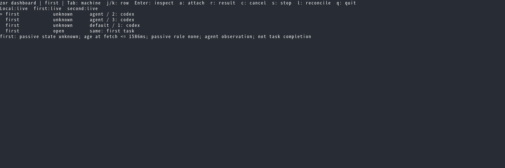
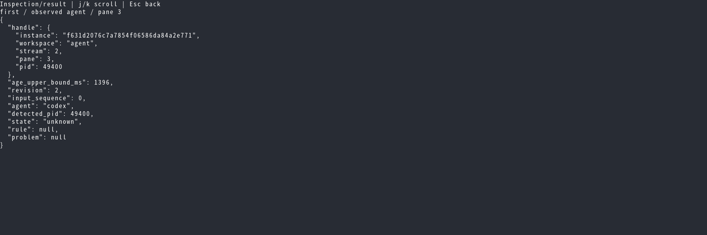
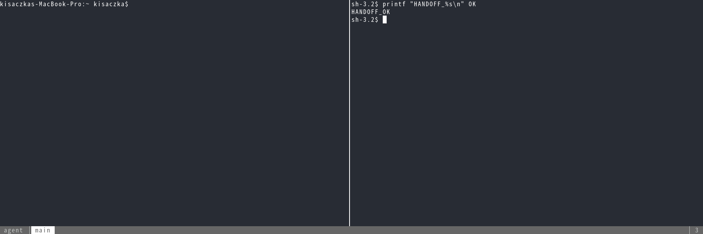
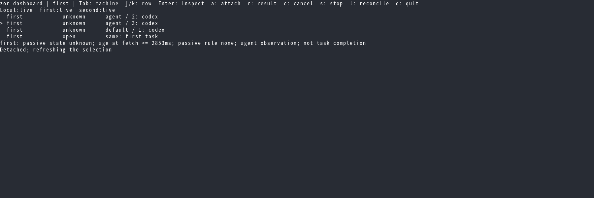
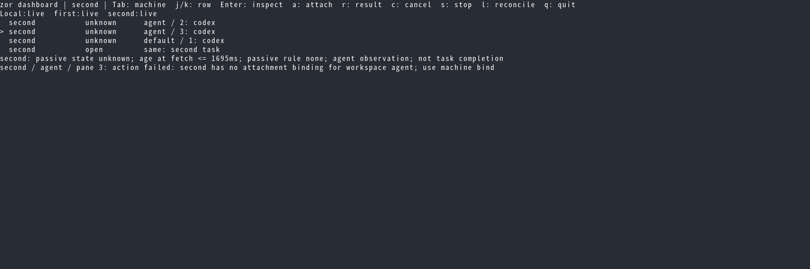
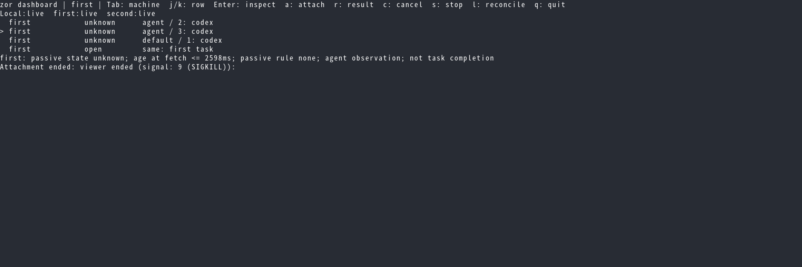
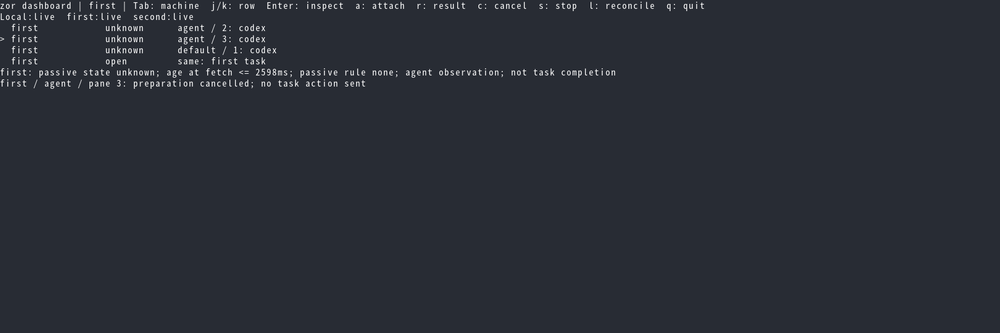

fux Betamax evidence
Captured test checkpoints. Rendering alone is not a visual approval.
terminal-76113-XwZAT4/0000.png: 01-machine-scope
terminal-76135-YurpKF/0000.png: 02-inspection
terminal-76149-HnsiZ8/0000.png: 03-viewer
terminal-76150-cQ5ZqC/0000.png: 04-return
terminal-76151-ymlTNe/0000.png: 05-missing-binding
terminal-76152-HdWlnd/0000.png: 06-viewer-killed
terminal-76155-0mrjgK/0000.png: 07-preparation-cancelled